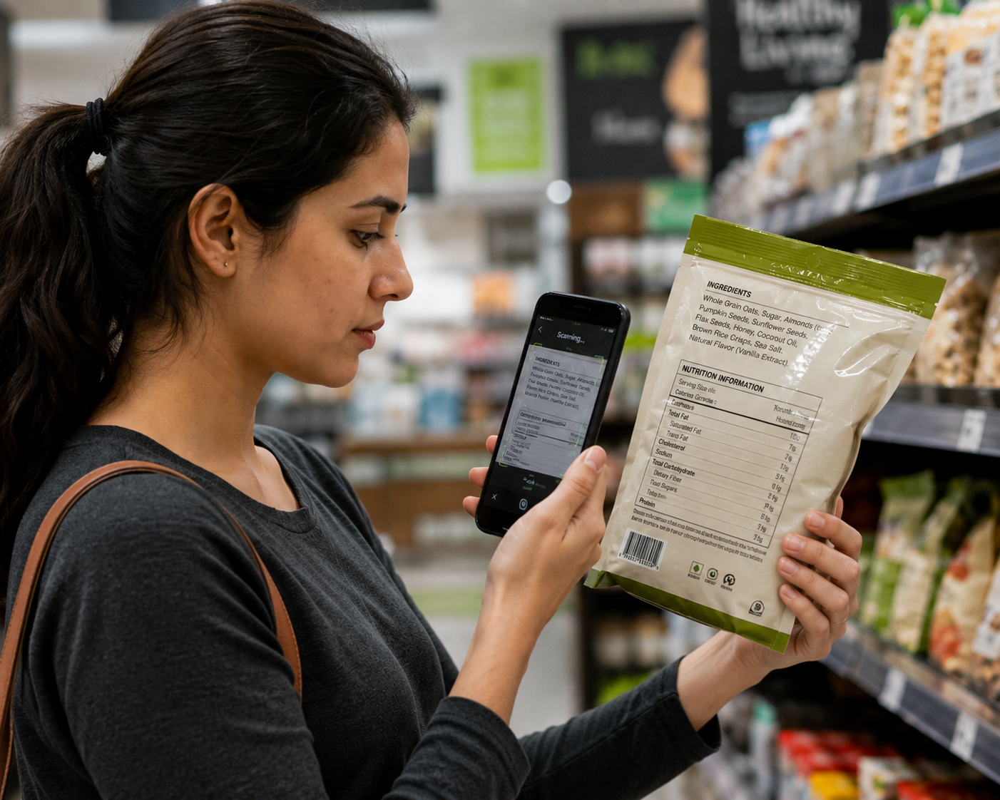

Grades the risk, with reasons
Each finding carries a severity, what the additive actually does in food, and what regular consumption is associated with — an explanation, not a scary word.
Educational only — not medical advice. Amount, frequency, and your own health all matter.
A second look at packaged food
Photograph the ingredients list and get a straight answer — what is really inside, which parts are worth worrying about, whether it suits your health condition, and from what age a child can safely eat it.

What you get
Ingredient lists are written for regulators, not for shoppers. You get the version meant for you.
How it works
No sign-up, no waiting for results, and nothing to install.
Pick your health conditions and say if a child will eat it. That is what makes the report personal instead of generic.
Photograph the ingredients list on the back of the pack. If the print is too small, type it in instead.
One tap gives you a plain-language verdict, what to avoid, a safe age for children, and a PDF you can keep.
What else it does
Each finding carries a severity, what the additive actually does in food, and what regular consumption is associated with — an explanation, not a scary word.
Tick Diabetes Type A, Diabetes Type B, High BP, Low BP, heart disease, kidney disease, PCOD, asthma or sensitive gut and the report leads with the ingredients you were specifically told to avoid, and why.
When a product looks heavily processed, name it and get alternatives that satisfy the same craving with a shorter ingredients list.
Conditions
Choose yours before you scan, and the report leads with what it means for you.
Kids safety
Kids safety runs on every single scan, whether or not the pack is aimed at children. The additives found on the label set a minimum age, and each one explains itself — so you can decide, rather than take the app's word for it.
Label photos are read on your device and thrown away. Guest scans stay in this browser. Sign in and your conditions and scan history are saved to your account, so they come with you on the next device.